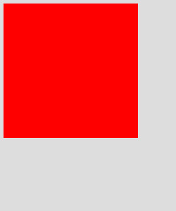
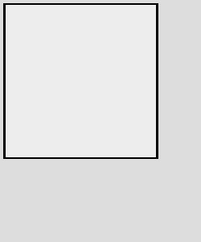

Intervention Image 其他圖片處理
cache() 快取
// 試著讀取快取的圖片
$img = Image::cache(function($image) {
// 讀取本機圖片，將圖片 resize 至 300x200，並作灰階處理
return $image->make('public/foo.jpg')
->resize(300, 200)
->greyscale();
});
若用檔案快取，快取的圖片資料會存放在 storage/framework/cache/data 目錄下。
canvas() 建立圖片畫布
// 建立畫布
$img = Image::canvas(300, 100);
Image::canvas(300, 100);
// 建立畫布，並使用 #ff0000 顏色當作背景
$img = Image::canvas(32, 32, '#ff0000');
Image::canvas(32, 32, ‘#ff0000’);
ellipse() 畫橢圓
// 建立顏色為 #ddd，寬度 300px，高度 100px 的畫布
$img = Image::canvas(300, 100, '#ddd');
// 在畫布中畫出寬度 25px，高度 60px，位置在 (50,50) ，顏色為 #0000ff 的橢圓
$img->ellipse(25, 60, 50, 50, function ($draw) {
$draw->background('#0000ff');
});
ellipse(25, 60, 50, 50) color #0000ff">
$img->ellipse(25, 60, 50, 50) color #0000ff
exif() 取得圖片 exif 資訊
必須使用 Imagick 2.3.9 的函式庫，並且必須編譯 --enable-exif，且有 mbstring 的套件才可取得 exif 資訊
// 取得所有 exif 資訊
$data = Image::make('public/foo.jpg')->exif();
// 讀取鏡頭 Model
$name = Image::make('public/foo.jpg')->exif('Model');
filesize() 檔案大小
當檔案不是從實際的檔案讀取，則會回傳 false
// 建立圖片實例
$img = Image::make('public/foo.jpg');
// 取得檔案大小
$size = $img->filesize();
fill() 填滿顏色或圖片
// 建立畫布，寬度 800px 高度 600px
$img = Image::canvas(800, 600);
// 填滿 #ff5500 顏色
$img->fill('#ff5500');
fill('#ff5500’);">
$img->fill('#ff5500’);
// 填滿圖片
$img->fill('tile.png');
fill(‘tile.png’);">
$img->fill(‘tile.png’);
filter() 指定過濾器
可以將一些常用的過濾規則通通寫在過濾器中，這樣就可以直接指定 Filter 去做過濾
// init new image instance
$img = Image::make('foo.jpg');
// apply filter
$img->filter(new DemoFilter(45));
<?php
namespace Intervention\Image\Filters;
class DemoFilter implements FilterInterface
{
const DEFAULT_SIZE = 10;
private $size;
public function __construct($size = null)
{
$this->size = is_numeric($size) ? intval($size) : self::DEFAULT_SIZE;
}
/**
* 執行圖片過濾
*/
public function applyFilter(\Intervention\Image\Image $image)
{
$image->pixelate($this->size);
$image->greyscale();
return $image;
}
}
width() 圖片寬度
// 取得圖片寬度
$width = Image::make('public/foo.jpg')->width();
height() 圖片高度
// 取得圖片高度
$height = Image::make('public/foo.jpg')->height();
interlace() 交錯模式
如果是 JPEG 的圖片，將會把圖片儲存成 progressive JPEG 的圖片
// 建立圖片實例
$img = Image::make('public/foo.png');
// 啟用 interlacing
$img->interlace();
// 儲存為 interlaced 的圖片
$img->save();
// 開啟 interlaced 圖片
$img = Image::make('public/interlaced.gif');
// 關閉 interlacing
$img->interlace(false);
// 儲存為 standard mode 的圖片
$img->save();
mime() 取得圖片 mime
$mime = Image::make('public/foo.jpg')->mime();
pickColor() 選出圖片顏色色碼
// 建立圖片實例
$img = Image::make('public/foo.jpg');
// 選出位置在 (100,100) 的像素顏色: 陣列資料
$arraycolor = $img->pickColor(100, 100);
/*
array:4 [
0 => 43
1 => 58
2 => 78
3 => 1.0
]
*/
// 選出位置在 (100,100) 的像素顏色: rgb
$rgb_color = $img->pickColor(100, 100, 'rgb');
// rgba(43, 58, 78)
// 選出位置在 (100,100) 的像素顏色: rgba
$rgba_color = $img->pickColor(100, 100, 'rgba');
// rgba(43, 58, 78, 1.00)
// 選出位置在 (100,100) 的像素顏色: hex
$hex_color = $img->pickColor(100, 100, 'hex');
// #2b3a4e
pixel() 在指定像素點畫出顏色
// 建立畫布
$img = Image::canvas(100, 100, '#ddd');
// 在 (32,32) 像素畫出藍色
$img->pixel('#0000ff', 32, 32);
// 在 (32,32) 像素畫出紅色
$img->pixel('#ff0000', 64, 64);
pixel();">
$img->pixel();
polygon() 畫出多邊形
// 建立畫布
$img = Image::canvas(800, 600, '#ddd');
// 定義多邊形位置
$points = array(
40, 50, // Point 1 (x, y)
20, 240, // Point 2 (x, y)
60, 60, // Point 3 (x, y)
240, 20, // Point 4 (x, y)
50, 40, // Point 5 (x, y)
10, 10 // Point 6 (x, y)
);
// 畫出多邊形
$img->polygon($points, function ($draw) {
// 背景顏色 #000ff
$draw->background('#0000ff');
// 邊框寬度 1，顏色 #ff0000
$draw->border(1, '#ff0000');
});
rectangle() 畫出四邊形
// 建立畫布
$img = Image::canvas(250, 300, '#ddd');
// 畫出紅色四邊形
$img->rectangle(5, 5, 195, 195, function ($draw) {
$draw->background('#ff0000');
});
rectangle() background #ff0000">
$img->rectangle() background #ff0000
// 畫出透明度 0.5 的四邊形，使用 2px 黑色邊框
$img->rectangle(5, 5, 195, 195, function ($draw) {
$draw->background('rgba(255, 255, 255, 0.5)');
$draw->border(2, '#000');
});
rectangle() background rgba(255, 255, 255, 0.5) border 2px #000">
$img->rectangle() background rgba(255, 255, 255, 0.5) border 2px #000
response() 回應包含 HTTP Header 圖片
參數1: 圖片類型
- jpg — return JPEG encoded image data
- png — return Portable Network Graphics (PNG) encoded image data
- gif — return Graphics Interchange Format (GIF) encoded image data
- tif — return Tagged Image File Format (TIFF) encoded image data
- bmp — return Bitmap (BMP) encoded image data
參數2: 圖片品質
- 數值介於 0~100
// 建立圖片實例
$img = Image::make('public/foo.jpg');
return $img->response();
// 回應 png 圖片
return $img->response('jpg');

$img->response(‘jpg’);
// 回應 jpg 圖片 品質 20
return $img->response('jpg', 20);
response(‘jpg’, 20);">
$img->response(‘jpg’, 20);
KeJyun 最新新書推薦
- Laravel 5 for beginner 新手道場：優雅運用框架快速開發 PHP 網站
- Laravel框架开发详解：从零基础到运用框架快速开发PHP网站
|
Laravel 是 PHP 的框架（Framework），提供了很多開發網站或 API 所需的工具及環境，經過簡單的設定就可以完成資料的處理及顯示，使開發者可以很優雅且快速的開發出各個不同的產品。本書適合有 PHP 基礎的人，但不知道要怎麼選擇框架，或者不用框架的人也能夠明白它的好處。 雖然 WordPress 也能夠架站，但如果有客製化需求，要開發各式各樣的網站，或提供 App 使用的 API，如此一來你只能選擇用框架，而 Laravel 是目前最受歡迎的。 本書將解說為什麼要使用框架，以及理解框架的優缺點後，要怎麼選擇框架，並用框架快速建構一個網站。除非必要，否則書中會避免專業技術用語，盡量使用最生活化易懂的例子及語氣，讓大家更容易進入 Laravel 的世界。 |
|

|
購書連結 |

|
購書連結 |